ParallelogramsHình bình hành
Grade 8 · Topic: QuadrilateralsLớp 8 · Chủ đề: Tứ giác
1Lesson IntroductionGiới thiệu bài học
Learning goalsMục tiêu bài học
By the end of this lesson you can:
Sau bài học này, em có thể:
recognize a parallelogram;
nhận biết được hình bình hành;
use its properties: opposite sides equal, opposite angles equal, diagonals bisect each other;
sử dụng được tính chất: các cạnh đối bằng nhau, các góc đối bằng nhau, hai đường chéo cắt nhau tại trung điểm của mỗi đường;
use the tests to prove that a quadrilateral is a parallelogram.
dùng được các dấu hiệu nhận biết để chứng minh một tứ giác là hình bình hành.
2Mathematical VocabularyTừ vựng Toán học
parallelogram – a quadrilateral whose opposite sides are parallel.
Hình bình hành – tứ giác có các cạnh đối song song.
consecutive angles – two angles with a common side, e.g. \(\widehat{A}\) and \(\widehat{B}\).
Hai góc kề một cạnh – hai góc có chung một cạnh, chẳng hạn \(\widehat{A}\) và \(\widehat{B}\).
midpoint / bisect each other – the diagonals meet at the midpoint of each.
Trung điểm / cắt nhau tại trung điểm của mỗi đường – hai đường chéo cắt nhau tại trung điểm của mỗi đường.
test for a parallelogram – a condition that proves a quadrilateral is a parallelogram.
Dấu hiệu nhận biết hình bình hành – điều kiện đủ để kết luận tứ giác là hình bình hành.
3Useful English PhrasesCụm từ tiếng Anh thường gặp
Identify the pairs of opposite sides in quadrilateral \(ABCD\).
Chỉ ra các cặp cạnh đối của tứ giác \(ABCD\).
Determine whether quadrilateral \(PQRS\) is a parallelogram.
Xác định tứ giác \(PQRS\) có phải hình bình hành không.
Since \(ABCD\) is a parallelogram, \(AB=CD\) and \(AD=BC\).
Vì \(ABCD\) là hình bình hành nên \(AB=CD\) và \(AD=BC\).
Point \(O\) is the midpoint of both diagonals.
\(O\) là trung điểm của cả hai đường chéo.
Segments \(EF\) and \(GH\) are parallel and have equal lengths, so \(EFGH\) is a parallelogram.
\(EF\) và \(GH\) song song và bằng nhau nên \(EFGH\) là hình bình hành.
4Prerequisite ReviewÔn tập kiến thức nền
Trapezoid (Lesson 11). Two angles along a leg are supplementary.
Hình thang (Bài 11). Hai góc kề một cạnh bên bù nhau.
Congruent triangles (grade 7). s.s.s., s.a.s., a.s.a.
Hai tam giác bằng nhau (lớp 7). c.c.c, c.g.c, g.c.g.
5TheoryLý thuyết
5.1 Definition and propertiesĐịnh nghĩa và tính chất
DefinitionĐịnh nghĩa
A parallelogram is a quadrilateral with both pairs of opposite sides parallel: \(AB\parallel CD\), \(AD\parallel BC\).
Hình bình hành là tứ giác có các cạnh đối song song: \(AB\parallel CD\), \(AD\parallel BC\).
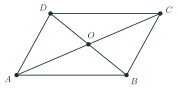
PropertiesTính chất
In parallelogram \(ABCD\): opposite sides are equal (\(AB=CD,\ AD=BC\)); opposite angles are equal (\(\widehat{A}=\widehat{C},\ \widehat{B}=\widehat{D}\)); the diagonals bisect each other (\(OA=OC,\ OB=OD\)).
Trong hình bình hành \(ABCD\): các cạnh đối bằng nhau (\(AB=CD,\ AD=BC\)); các góc đối bằng nhau (\(\widehat{A}=\widehat{C},\ \widehat{B}=\widehat{D}\)); hai đường chéo cắt nhau tại trung điểm của mỗi đường (\(OA=OC,\ OB=OD\)).
Consecutive angles are supplementary: \(\widehat{A}+\widehat{B}=180^\circ\).
Hai góc kề một cạnh bù nhau: \(\widehat{A}+\widehat{B}=180^\circ\).
5.2 Tests for a parallelogramDấu hiệu nhận biết hình bình hành
A quadrilateral is a parallelogram if…Tứ giác là hình bình hành nếu…
1) both pairs of opposite sides are parallel; 2) both pairs of opposite sides are equal; 3) one pair of opposite sides is parallel and equal; 4) both pairs of opposite angles are equal; 5) the diagonals bisect each other.
1) các cạnh đối song song; 2) các cạnh đối bằng nhau; 3) có hai cạnh đối song song và bằng nhau; 4) các góc đối bằng nhau; 5) hai đường chéo cắt nhau tại trung điểm của mỗi đường.
Watch out!Lưu ý
"One pair of opposite sides parallel" and "the other pair equal" is not a test: an isosceles trapezoid satisfies it.
"Một cặp cạnh đối song song, cặp kia bằng nhau" không phải dấu hiệu: hình thang cân cũng thỏa mãn.
6Worked ExamplesVí dụ có lời giải
ExampleVí dụ 1RememberingNhận biết – Sides and anglesCạnh và góc
Parallelogram \(ABCD\) has \(AB=5\) cm, \(BC=3\) cm and \(\widehat{A}=65^\circ\). Find \(CD\), \(AD\), \(\widehat{C}\), \(\widehat{B}\).
Hình bình hành \(ABCD\) có \(AB=5\) cm, \(BC=3\) cm, \(\widehat{A}=65^\circ\). Tính \(CD\), \(AD\), \(\widehat{C}\), \(\widehat{B}\).
Analysis: Opposite sides and opposite angles are equal.
Phân tích: Các cạnh đối, các góc đối bằng nhau.
\(CD=AB=5\) cm, \(AD=BC=3\) cm.
\(CD=AB=5\) cm, \(AD=BC=3\) cm.
\(\widehat{C}=\widehat{A}=65^\circ\), \(\widehat{B}=180^\circ-65^\circ=115^\circ\).
\(\widehat{C}=\widehat{A}=65^\circ\), \(\widehat{B}=180^\circ-65^\circ=115^\circ\).
\(CD=5\) cm, \(AD=3\) cm, \(\widehat{C}=65^\circ\), \(\widehat{B}=115^\circ\).
\(CD=5\) cm, \(AD=3\) cm, \(\widehat{C}=65^\circ\), \(\widehat{B}=115^\circ\).
ExampleVí dụ 2UnderstandingThông hiểu – Consecutive anglesHai góc kề một cạnh
In parallelogram \(ABCD\), \(\widehat{A}=(3x+18)^\circ\) and \(\widehat{B}=(5x-6)^\circ\). Find \(x\) and the angles.
Hình bình hành \(ABCD\) có \(\widehat{A}=(3x+18)^\circ\), \(\widehat{B}=(5x-6)^\circ\). Tìm \(x\) và các góc.
Analysis: \(\widehat{A}+\widehat{B}=180^\circ\).
Phân tích: \(\widehat{A}+\widehat{B}=180^\circ\).
\(8x+12=180\Rightarrow x=21\).
\(8x+12=180\Rightarrow x=21\).
\(\widehat{A}=\widehat{C}=81^\circ\), \(\widehat{B}=\widehat{D}=99^\circ\).
\(\widehat{A}=\widehat{C}=81^\circ\), \(\widehat{B}=\widehat{D}=99^\circ\).
\(x=21\); \(81^\circ,\ 99^\circ,\ 81^\circ,\ 99^\circ\).
\(x=21\); \(81^\circ,\ 99^\circ,\ 81^\circ,\ 99^\circ\).
ExampleVí dụ 3UnderstandingThông hiểu – Is it a parallelogram?Có phải hình bình hành?
a) Quadrilateral \(JKLM\) has \(JK\parallel LM\) and \(JK=LM\).
b) The diagonals of \(PQRS\) meet at \(T\) with \(PT=TR=4\) cm, \(QT=TS=3\) cm. Are they parallelograms? Find \(PR\), \(QS\).
a) Tứ giác \(JKLM\) có \(JK\parallel LM\) và \(JK=LM\).
b) Hai đường chéo của \(PQRS\) cắt nhau tại \(T\), \(PT=TR=4\) cm, \(QT=TS=3\) cm. Chúng có phải hình bình hành không? Tính \(PR\), \(QS\).
Analysis: Compare with the tests.
Phân tích: Đối chiếu với các dấu hiệu.
a) One pair of opposite sides parallel and equal ⇒ parallelogram.
a) Có hai cạnh đối song song và bằng nhau ⇒ hình bình hành.
b) The diagonals bisect each other ⇒ parallelogram; \(PR=8\) cm, \(QS=6\) cm.
b) Hai đường chéo cắt nhau tại trung điểm mỗi đường ⇒ hình bình hành; \(PR=8\) cm, \(QS=6\) cm.
Both are parallelograms; \(PR=8\) cm, \(QS=6\) cm.
Cả hai đều là hình bình hành; \(PR=8\) cm, \(QS=6\) cm.
ExampleVí dụ 4Basic applicationVận dụng thấp – A proof with midpointsChứng minh với trung điểm
In parallelogram \(KLMN\), \(P\) is the midpoint of \(KL\) and \(Q\) is the midpoint of \(MN\). Prove that \(LQ=NP\).
Cho hình bình hành \(KLMN\); \(P\) là trung điểm của \(KL\), \(Q\) là trung điểm của \(MN\). Chứng minh \(LQ=NP\).
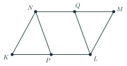
Analysis: Show that \(PLQN\) is a parallelogram.
Phân tích: Chứng minh \(PLQN\) là hình bình hành.
\(PL=\dfrac{KL}{2}\), \(NQ=\dfrac{MN}{2}\) and \(KL=MN\), so \(PL=NQ\); also \(PL\parallel NQ\) (on \(KL\parallel MN\)).
\(PL=\dfrac{KL}{2}\), \(NQ=\dfrac{MN}{2}\) mà \(KL=MN\) nên \(PL=NQ\); lại có \(PL\parallel NQ\) (vì \(KL\parallel MN\)).
So \(PLQN\) is a parallelogram (one pair of opposite sides parallel and equal), hence \(LQ=NP\).
Vậy \(PLQN\) là hình bình hành (hai cạnh đối song song và bằng nhau), suy ra \(LQ=NP\).
\(LQ=NP\).
\(LQ=NP\).
ExampleVí dụ 5ApplicationVận dụng – A vehicle liftBệ nâng ô tô
A vehicle lift has two equal arms \(AD\) and \(BC\) that always stay parallel; \(A, B\) are on the ground and \(C, D\) on the platform. Why does the platform \(DC\) stay parallel to the ground \(AB\)?
Bệ nâng ô tô có hai tay nâng \(AD\), \(BC\) bằng nhau và luôn song song; \(A, B\) gắn với mặt đất, \(C, D\) gắn với sàn nâng. Vì sao sàn nâng \(DC\) luôn song song với mặt đất \(AB\)?
Analysis: Look at quadrilateral \(ABCD\).
Phân tích: Xét tứ giác \(ABCD\).
\(AD\parallel BC\) and \(AD=BC\), so \(ABCD\) is a parallelogram.
\(AD\parallel BC\) và \(AD=BC\) nên \(ABCD\) là hình bình hành.
Hence \(DC\parallel AB\) at every position of the arms.
Do đó \(DC\parallel AB\) ở mọi vị trí của tay nâng.
\(ABCD\) is always a parallelogram, so \(DC\parallel AB\).
\(ABCD\) luôn là hình bình hành nên \(DC\parallel AB\).
7PracticeBài tập luyện tập
A. Multiple ChoiceA. Trắc nghiệm nhiều lựa chọn
Parallelogram \(KLMN\) has \(\widehat{K}=48^\circ\). Find the other angles.
Hình bình hành \(KLMN\) có \(\widehat{K}=48^\circ\). Tính các góc còn lại.
Answer: d. Opposite angles are equal; consecutive angles are supplementary.
Đáp án d. Hai góc đối bằng nhau; hai góc kề một cạnh bù nhau.
The diagonals of parallelogram \(KLMN\) meet at \(O\), with \(OK=2\) cm and \(OL=3\) cm. Find the diagonals.
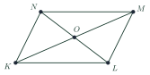
Hai đường chéo của hình bình hành \(KLMN\) cắt nhau tại \(O\), biết \(OK=2\) cm, \(OL=3\) cm. Tính độ dài hai đường chéo.
Answer: a. \(O\) is the midpoint of both diagonals.
Đáp án a. \(O\) là trung điểm của mỗi đường chéo.
A quadrilateral is a parallelogram if…
Một tứ giác là hình bình hành nếu
Answer: b. Tests: opposite sides parallel / equal; one pair parallel and equal; opposite angles equal; diagonals bisect each other.
Đáp án b. Dấu hiệu: các cạnh đối song song / bằng nhau; hai cạnh đối song song và bằng nhau; các góc đối bằng nhau; hai đường chéo cắt nhau tại trung điểm mỗi đường.
B. True or FalseB. Đúng hoặc sai
In every parallelogram, each diagonal bisects two angles.
Trong mọi hình bình hành, mỗi đường chéo là phân giác của hai góc.
False. Properties: opposite sides equal, opposite angles equal, diagonals bisect each other.
Sai. Tính chất: các cạnh đối bằng nhau, các góc đối bằng nhau, hai đường chéo cắt nhau tại trung điểm mỗi đường.
Parallelogram \(DEFG\) has \(\widehat{D}=110^\circ\). Then \(\widehat{E}=110^\circ\).
Hình bình hành \(DEFG\) có \(\widehat{D}=110^\circ\). Khi đó \(\widehat{E}=110^\circ\).
False. \(\widehat{E}=180^\circ-110^\circ=70^\circ\).
Sai. \(\widehat{E}=180^\circ-110^\circ=70^\circ\).
C. Short AnswerC. Trả lời ngắn
Parallelogram \(KLMN\) has \(KL=3x+6\) and \(MN=5x-2\) (cm). Find \(x\).
Hình bình hành \(KLMN\) có \(KL=3x+6\) và \(MN=5x-2\) (cm). Tìm \(x\).
Enter a number.
Nhập một số.
Answer: 4. Opposite sides are equal: \(3x+6=5x-2\Rightarrow x=4\).
Đáp số: 4. Hai cạnh đối bằng nhau: \(3x+6=5x-2\Rightarrow x=4\).
Parallelogram \(KLMN\) has \(\widehat{K}=124^\circ\). Find \(\widehat{N}\) in degrees.
Hình bình hành \(KLMN\) có \(\widehat{K}=124^\circ\). Tính số đo \(\widehat{N}\) (theo độ).
Enter a number.
Nhập một số.
Answer: 56. \(\widehat{N}=56^\circ\).
Đáp số: 56. \(\widehat{N}=56^\circ\).
D1. Self-practice – RememberingD1. Tự luyện – Mức Nhận biết
In parallelogram \(ABCD\), which angle is equal to \(\widehat{B}\)?
Trong hình bình hành \(ABCD\), góc nào bằng \(\widehat{B}\)?
Answer: a. Opposite angles of a parallelogram are equal.
Đáp án a. Hình bình hành có các góc đối bằng nhau.
In parallelogram \(IJKL\), which side is equal and parallel to \(IJ\)?
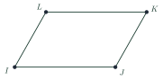
Trong hình bình hành \(IJKL\), cạnh nào song song và bằng \(IJ\)?
Answer: c. Opposite sides are parallel and equal.
Đáp án c. Hai cạnh đối song song và bằng nhau.
The diagonals of parallelogram \(IJKL\) meet at \(O\). Which statement is always true?
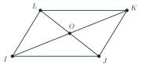
Hai đường chéo của hình bình hành \(IJKL\) cắt nhau tại \(O\). Khẳng định nào luôn đúng?
Answer: c. The diagonals bisect each other.
Đáp án c. Hai đường chéo cắt nhau tại trung điểm của mỗi đường.
D2. Self-practice – UnderstandingD2. Tự luyện – Mức Thông hiểu
Parallelogram \(MNPQ\) has \(\widehat{M}=(4x-2)^\circ\) and \(\widehat{N}=(3x+35)^\circ\). Find \(\widehat{P}\).
Hình bình hành \(MNPQ\) có \(\widehat{M}=(4x-2)^\circ\) và \(\widehat{N}=(3x+35)^\circ\). Tính \(\widehat{P}\).
Answer: b. \(\widehat{M}+\widehat{N}=180^\circ\Rightarrow x=21\); \(\widehat{P}=\widehat{M}=82^\circ\).
Đáp án b. \(\widehat{M}+\widehat{N}=180^\circ\Rightarrow x=21\); \(\widehat{P}=\widehat{M}=82^\circ\).
Parallelogram \(ABCD\) has \(AB=9\) cm and \(BC=10\) cm. Find its perimeter.
Hình bình hành \(ABCD\) có \(AB=9\) cm, \(BC=10\) cm. Tính chu vi của nó.
Answer: b. \(2(9+10)=38\) cm.
Đáp án b. \(2(9+10)=38\) cm.
The diagonals of parallelogram \(DEFG\) meet at \(O\), with \(OD=x+8\) and \(OF=3x-2\) (cm). Find \(DF\).
Hai đường chéo của hình bình hành \(DEFG\) cắt nhau tại \(O\), biết \(OD=x+8\), \(OF=3x-2\) (cm). Tính \(DF\).
Answer: b. \(x+8=3x-2\Rightarrow x=5\); \(DF=2\cdot13=26\) cm.
Đáp án b. \(x+8=3x-2\Rightarrow x=5\); \(DF=2\cdot13=26\) cm.
D3. Self-practice – Basic applicationD3. Tự luyện – Mức Vận dụng thấp
Parallelogram \(IJKL\) has \(\widehat{I}-\widehat{J}=40^\circ\). Find \(\widehat{K}\).
Hình bình hành \(IJKL\) có \(\widehat{I}-\widehat{J}=40^\circ\). Tính \(\widehat{K}\).
Answer: b. \(\widehat{I}+\widehat{J}=180^\circ\Rightarrow \widehat{I}=110^\circ\), and \(\widehat{K}=\widehat{I}\).
Đáp án b. \(\widehat{I}+\widehat{J}=180^\circ\Rightarrow \widehat{I}=110^\circ\), mà \(\widehat{K}=\widehat{I}\).
Parallelogram \(KLMN\) has \(KL=3\,LM\) and perimeter 72 cm. Find \(KL\).
Hình bình hành \(KLMN\) có \(KL=3\,LM\) và chu vi 72 cm. Tính \(KL\).
Answer: a. \(KL+LM=36\); \(4\) parts → one part \(9\) cm; \(KL=27\) cm.
Đáp án a. \(KL+LM=36\); chia thành \(4\) phần, mỗi phần \(9\) cm; \(KL=27\) cm.
Which data guarantee that quadrilateral \(WXYZ\) is a parallelogram?
Với dữ kiện nào thì tứ giác \(WXYZ\) chắc chắn là hình bình hành?
Answer: d. One pair of opposite sides that is both parallel and equal is enough.
Đáp án d. Một cặp cạnh đối vừa song song vừa bằng nhau là đủ.
D4. Self-practice – Advanced applicationD4. Tự luyện – Mức Vận dụng
In a folding lamp arm, two equal bars stay parallel. Why is the lamp head always kept at the same direction?
Cánh tay đèn bàn gấp có hai thanh bằng nhau luôn song song. Vì sao đầu đèn luôn giữ nguyên hướng?
Answer: d. Then the other pair of opposite sides is also parallel.
Đáp án d. Khi đó cặp cạnh đối còn lại cũng song song.
A parallelogram-shaped plot has sides 40 m and 22 m. Fencing costs 60 thousand VND per meter. How much does it cost to fence the plot?
Một mảnh đất hình bình hành có hai cạnh dài 40 m và 22 m. Mỗi mét hàng rào giá 60 nghìn đồng. Làm hàng rào quanh mảnh đất hết bao nhiêu tiền?
Answer: a. Perimeter \(2(40+22)=124\) m; cost \(124\cdot60\) = 7,440 thousand VND.
Đáp án a. Chu vi \(2(40+22)=124\) m; số tiền \(124\cdot60\) = 7 440 nghìn đồng.
A folding gate is made of parallelograms. In one parallelogram an angle is \(55^\circ\). What is the angle next to it (on the same side)?
Một cửa xếp được ghép từ các hình bình hành. Một hình bình hành có một góc bằng \(55^\circ\). Góc kề với nó (chung một cạnh) bằng bao nhiêu?
Answer: d. Consecutive angles are supplementary: \(180^\circ-55^\circ=125^\circ\).
Đáp án d. Hai góc kề một cạnh bù nhau: \(180^\circ-55^\circ=125^\circ\).
A. Multiple ChoiceA. Trắc nghiệm nhiều lựa chọn
Parallelogram \(ABCD\) has \(\widehat{A}=84^\circ\). Find the other angles.
Hình bình hành \(ABCD\) có \(\widehat{A}=84^\circ\). Tính các góc còn lại.
Answer: d. Opposite angles are equal; consecutive angles are supplementary.
Đáp án d. Hai góc đối bằng nhau; hai góc kề một cạnh bù nhau.
The diagonals of parallelogram \(WXYZ\) meet at \(O\), with \(OW=2\) cm and \(OX=9\) cm. Find the diagonals.
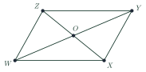
Hai đường chéo của hình bình hành \(WXYZ\) cắt nhau tại \(O\), biết \(OW=2\) cm, \(OX=9\) cm. Tính độ dài hai đường chéo.
Answer: a. \(O\) is the midpoint of both diagonals.
Đáp án a. \(O\) là trung điểm của mỗi đường chéo.
Choose the condition that makes quadrilateral \(ABCD\) a parallelogram.
Chọn điều kiện để tứ giác \(ABCD\) là hình bình hành.
Answer: a. Tests: opposite sides parallel / equal; one pair parallel and equal; opposite angles equal; diagonals bisect each other.
Đáp án a. Dấu hiệu: các cạnh đối song song / bằng nhau; hai cạnh đối song song và bằng nhau; các góc đối bằng nhau; hai đường chéo cắt nhau tại trung điểm mỗi đường.
B. True or FalseB. Đúng hoặc sai
In every parallelogram, the diagonals are perpendicular.
Trong mọi hình bình hành, hai đường chéo vuông góc với nhau.
False. Properties: opposite sides equal, opposite angles equal, diagonals bisect each other.
Sai. Tính chất: các cạnh đối bằng nhau, các góc đối bằng nhau, hai đường chéo cắt nhau tại trung điểm mỗi đường.
Parallelogram \(PQRS\) has \(\widehat{P}=75^\circ\). Then \(\widehat{Q}=105^\circ\).
Hình bình hành \(PQRS\) có \(\widehat{P}=75^\circ\). Khi đó \(\widehat{Q}=105^\circ\).
True. \(\widehat{Q}=180^\circ-75^\circ=105^\circ\).
Đúng. \(\widehat{Q}=180^\circ-75^\circ=105^\circ\).
C. Short AnswerC. Trả lời ngắn
Parallelogram \(PQRS\) has \(PQ=3x+4\) and \(RS=5x-6\) (cm). Find \(x\).
Hình bình hành \(PQRS\) có \(PQ=3x+4\) và \(RS=5x-6\) (cm). Tìm \(x\).
Enter a number.
Nhập một số.
Answer: 5. Opposite sides are equal: \(3x+4=5x-6\Rightarrow x=5\).
Đáp số: 5. Hai cạnh đối bằng nhau: \(3x+4=5x-6\Rightarrow x=5\).
Parallelogram \(MNPQ\) has \(\widehat{M}=88^\circ\). Find \(\widehat{N}\) in degrees.
Hình bình hành \(MNPQ\) có \(\widehat{M}=88^\circ\). Tính số đo \(\widehat{N}\) (theo độ).
Enter a number.
Nhập một số.
Answer: 92. \(\widehat{N}=92^\circ\).
Đáp số: 92. \(\widehat{N}=92^\circ\).
D1. Self-practice – RememberingD1. Tự luyện – Mức Nhận biết
In parallelogram \(MNPQ\), which angle is equal to \(\widehat{P}\)?
Trong hình bình hành \(MNPQ\), góc nào bằng \(\widehat{P}\)?
Answer: b. Opposite angles of a parallelogram are equal.
Đáp án b. Hình bình hành có các góc đối bằng nhau.
In parallelogram \(KLMN\), which side is equal and parallel to \(NK\)?
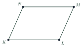
Trong hình bình hành \(KLMN\), cạnh nào song song và bằng \(NK\)?
Answer: d. Opposite sides are parallel and equal.
Đáp án d. Hai cạnh đối song song và bằng nhau.
The diagonals of parallelogram \(WXYZ\) meet at \(O\). Which statement is always true?
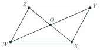
Hai đường chéo của hình bình hành \(WXYZ\) cắt nhau tại \(O\). Khẳng định nào luôn đúng?
Answer: b. The diagonals bisect each other.
Đáp án b. Hai đường chéo cắt nhau tại trung điểm của mỗi đường.
D2. Self-practice – UnderstandingD2. Tự luyện – Mức Thông hiểu
Parallelogram \(IJKL\) has \(\widehat{I}=(2x-16)^\circ\) and \(\widehat{J}=(5x+21)^\circ\). Find \(\widehat{K}\).
Hình bình hành \(IJKL\) có \(\widehat{I}=(2x-16)^\circ\) và \(\widehat{J}=(5x+21)^\circ\). Tính \(\widehat{K}\).
Answer: a. \(\widehat{I}+\widehat{J}=180^\circ\Rightarrow x=25\); \(\widehat{K}=\widehat{I}=34^\circ\).
Đáp án a. \(\widehat{I}+\widehat{J}=180^\circ\Rightarrow x=25\); \(\widehat{K}=\widehat{I}=34^\circ\).
Parallelogram \(KLMN\) has \(KL=14\) cm and \(LM=12\) cm. Find its perimeter.
Hình bình hành \(KLMN\) có \(KL=14\) cm, \(LM=12\) cm. Tính chu vi của nó.
Answer: d. \(2(14+12)=52\) cm.
Đáp án d. \(2(14+12)=52\) cm.
The diagonals of parallelogram \(IJKL\) meet at \(O\), with \(OI=2x+3\) and \(OK=4x-9\) (cm). Find \(IK\).
Hai đường chéo của hình bình hành \(IJKL\) cắt nhau tại \(O\), biết \(OI=2x+3\), \(OK=4x-9\) (cm). Tính \(IK\).
Answer: c. \(2x+3=4x-9\Rightarrow x=6\); \(IK=2\cdot15=30\) cm.
Đáp án c. \(2x+3=4x-9\Rightarrow x=6\); \(IK=2\cdot15=30\) cm.
D3. Self-practice – Basic applicationD3. Tự luyện – Mức Vận dụng thấp
Parallelogram \(WXYZ\) has \(\widehat{W}-\widehat{X}=30^\circ\). Find \(\widehat{Y}\).
Hình bình hành \(WXYZ\) có \(\widehat{W}-\widehat{X}=30^\circ\). Tính \(\widehat{Y}\).
Answer: a. \(\widehat{W}+\widehat{X}=180^\circ\Rightarrow \widehat{W}=105^\circ\), and \(\widehat{Y}=\widehat{W}\).
Đáp án a. \(\widehat{W}+\widehat{X}=180^\circ\Rightarrow \widehat{W}=105^\circ\), mà \(\widehat{Y}=\widehat{W}\).
Parallelogram \(WXYZ\) has \(WX=2\,XY\) and perimeter 30 cm. Find \(WX\).
Hình bình hành \(WXYZ\) có \(WX=2\,XY\) và chu vi 30 cm. Tính \(WX\).
Answer: a. \(WX+XY=15\); \(3\) parts → one part \(5\) cm; \(WX=10\) cm.
Đáp án a. \(WX+XY=15\); chia thành \(3\) phần, mỗi phần \(5\) cm; \(WX=10\) cm.
Which data guarantee that quadrilateral \(PQRS\) is a parallelogram?
Với dữ kiện nào thì tứ giác \(PQRS\) chắc chắn là hình bình hành?
Answer: b. One pair of opposite sides that is both parallel and equal is enough.
Đáp án b. Một cặp cạnh đối vừa song song vừa bằng nhau là đủ.
D4. Self-practice – Advanced applicationD4. Tự luyện – Mức Vận dụng
A balance with two equal parallel rods keeps both pans level. Which shape explains this?
Một chiếc cân có hai thanh bằng nhau, song song giữ cho hai đĩa cân luôn nằm ngang. Hình nào giải thích điều này?
Answer: d. Then the other pair of opposite sides is also parallel.
Đáp án d. Khi đó cặp cạnh đối còn lại cũng song song.
A parallelogram-shaped plot has sides 36 m and 28 m. Fencing costs 80 thousand VND per meter. How much does it cost to fence the plot?
Một mảnh đất hình bình hành có hai cạnh dài 36 m và 28 m. Mỗi mét hàng rào giá 80 nghìn đồng. Làm hàng rào quanh mảnh đất hết bao nhiêu tiền?
Answer: a. Perimeter \(2(36+28)=128\) m; cost \(128\cdot80\) = 10,240 thousand VND.
Đáp án a. Chu vi \(2(36+28)=128\) m; số tiền \(128\cdot80\) = 10 240 nghìn đồng.
A folding gate is made of parallelograms. In one parallelogram an angle is \(40^\circ\). What is the angle next to it (on the same side)?
Một cửa xếp được ghép từ các hình bình hành. Một hình bình hành có một góc bằng \(40^\circ\). Góc kề với nó (chung một cạnh) bằng bao nhiêu?
Answer: a. Consecutive angles are supplementary: \(180^\circ-40^\circ=140^\circ\).
Đáp án a. Hai góc kề một cạnh bù nhau: \(180^\circ-40^\circ=140^\circ\).
A. Multiple ChoiceA. Trắc nghiệm nhiều lựa chọn
Parallelogram \(EFGH\) has \(\widehat{E}=102^\circ\). Find the other angles.
Hình bình hành \(EFGH\) có \(\widehat{E}=102^\circ\). Tính các góc còn lại.
Answer: c. Opposite angles are equal; consecutive angles are supplementary.
Đáp án c. Hai góc đối bằng nhau; hai góc kề một cạnh bù nhau.
The diagonals of parallelogram \(MNPQ\) meet at \(O\), with \(OM=3\) cm and \(ON=8\) cm. Find the diagonals.
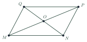
Hai đường chéo của hình bình hành \(MNPQ\) cắt nhau tại \(O\), biết \(OM=3\) cm, \(ON=8\) cm. Tính độ dài hai đường chéo.
Answer: b. \(O\) is the midpoint of both diagonals.
Đáp án b. \(O\) là trung điểm của mỗi đường chéo.
Which condition guarantees that a quadrilateral is a parallelogram?
Điều kiện nào đảm bảo một tứ giác là hình bình hành?
Answer: a. Tests: opposite sides parallel / equal; one pair parallel and equal; opposite angles equal; diagonals bisect each other.
Đáp án a. Dấu hiệu: các cạnh đối song song / bằng nhau; hai cạnh đối song song và bằng nhau; các góc đối bằng nhau; hai đường chéo cắt nhau tại trung điểm mỗi đường.
B. True or FalseB. Đúng hoặc sai
In every parallelogram, the opposite sides are equal.
Trong mọi hình bình hành, các cạnh đối bằng nhau.
True. Properties: opposite sides equal, opposite angles equal, diagonals bisect each other.
Đúng. Tính chất: các cạnh đối bằng nhau, các góc đối bằng nhau, hai đường chéo cắt nhau tại trung điểm mỗi đường.
Parallelogram \(ABCD\) has \(\widehat{A}=40^\circ\). Then \(\widehat{B}=40^\circ\).
Hình bình hành \(ABCD\) có \(\widehat{A}=40^\circ\). Khi đó \(\widehat{B}=40^\circ\).
False. \(\widehat{B}=180^\circ-40^\circ=140^\circ\).
Sai. \(\widehat{B}=180^\circ-40^\circ=140^\circ\).
C. Short AnswerC. Trả lời ngắn
Parallelogram \(WXYZ\) has \(WX=x+1\) and \(YZ=4x-17\) (cm). Find \(x\).
Hình bình hành \(WXYZ\) có \(WX=x+1\) và \(YZ=4x-17\) (cm). Tìm \(x\).
Enter a number.
Nhập một số.
Answer: 6. Opposite sides are equal: \(x+1=4x-17\Rightarrow x=6\).
Đáp số: 6. Hai cạnh đối bằng nhau: \(x+1=4x-17\Rightarrow x=6\).
Parallelogram \(MNPQ\) has \(\widehat{M}=70^\circ\). Find \(\widehat{P}\) in degrees.
Hình bình hành \(MNPQ\) có \(\widehat{M}=70^\circ\). Tính số đo \(\widehat{P}\) (theo độ).
Enter a number.
Nhập một số.
Answer: 70. \(\widehat{P}=70^\circ\).
Đáp số: 70. \(\widehat{P}=70^\circ\).
D1. Self-practice – RememberingD1. Tự luyện – Mức Nhận biết
In parallelogram \(IJKL\), which angle is equal to \(\widehat{J}\)?
Trong hình bình hành \(IJKL\), góc nào bằng \(\widehat{J}\)?
Answer: d. Opposite angles of a parallelogram are equal.
Đáp án d. Hình bình hành có các góc đối bằng nhau.
In parallelogram \(IJKL\), which side is equal and parallel to \(LI\)?
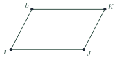
Trong hình bình hành \(IJKL\), cạnh nào song song và bằng \(LI\)?
Answer: d. Opposite sides are parallel and equal.
Đáp án d. Hai cạnh đối song song và bằng nhau.
The diagonals of parallelogram \(EFGH\) meet at \(O\). Which statement is always true?
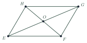
Hai đường chéo của hình bình hành \(EFGH\) cắt nhau tại \(O\). Khẳng định nào luôn đúng?
Answer: a. The diagonals bisect each other.
Đáp án a. Hai đường chéo cắt nhau tại trung điểm của mỗi đường.
D2. Self-practice – UnderstandingD2. Tự luyện – Mức Thông hiểu
Parallelogram \(ABCD\) has \(\widehat{A}=(4x+4)^\circ\) and \(\widehat{B}=(4x+40)^\circ\). Find \(\widehat{C}\).
Hình bình hành \(ABCD\) có \(\widehat{A}=(4x+4)^\circ\) và \(\widehat{B}=(4x+40)^\circ\). Tính \(\widehat{C}\).
Answer: d. \(\widehat{A}+\widehat{B}=180^\circ\Rightarrow x=17\); \(\widehat{C}=\widehat{A}=72^\circ\).
Đáp án d. \(\widehat{A}+\widehat{B}=180^\circ\Rightarrow x=17\); \(\widehat{C}=\widehat{A}=72^\circ\).
Parallelogram \(EFGH\) has \(EF=11\) cm and \(FG=3\) cm. Find its perimeter.
Hình bình hành \(EFGH\) có \(EF=11\) cm, \(FG=3\) cm. Tính chu vi của nó.
Answer: b. \(2(11+3)=28\) cm.
Đáp án b. \(2(11+3)=28\) cm.
The diagonals of parallelogram \(DEFG\) meet at \(O\), with \(OD=x+3\) and \(OF=3x-1\) (cm). Find \(DF\).
Hai đường chéo của hình bình hành \(DEFG\) cắt nhau tại \(O\), biết \(OD=x+3\), \(OF=3x-1\) (cm). Tính \(DF\).
Answer: d. \(x+3=3x-1\Rightarrow x=2\); \(DF=2\cdot5=10\) cm.
Đáp án d. \(x+3=3x-1\Rightarrow x=2\); \(DF=2\cdot5=10\) cm.
D3. Self-practice – Basic applicationD3. Tự luyện – Mức Vận dụng thấp
Parallelogram \(WXYZ\) has \(\widehat{W}-\widehat{X}=90^\circ\). Find \(\widehat{Y}\).
Hình bình hành \(WXYZ\) có \(\widehat{W}-\widehat{X}=90^\circ\). Tính \(\widehat{Y}\).
Answer: a. \(\widehat{W}+\widehat{X}=180^\circ\Rightarrow \widehat{W}=135^\circ\), and \(\widehat{Y}=\widehat{W}\).
Đáp án a. \(\widehat{W}+\widehat{X}=180^\circ\Rightarrow \widehat{W}=135^\circ\), mà \(\widehat{Y}=\widehat{W}\).
Parallelogram \(DEFG\) has \(DE=3\,EF\) and perimeter 24 cm. Find \(DE\).
Hình bình hành \(DEFG\) có \(DE=3\,EF\) và chu vi 24 cm. Tính \(DE\).
Answer: a. \(DE+EF=12\); \(4\) parts → one part \(3\) cm; \(DE=9\) cm.
Đáp án a. \(DE+EF=12\); chia thành \(4\) phần, mỗi phần \(3\) cm; \(DE=9\) cm.
Which data guarantee that quadrilateral \(MNPQ\) is a parallelogram?
Với dữ kiện nào thì tứ giác \(MNPQ\) chắc chắn là hình bình hành?
Answer: d. One pair of opposite sides that is both parallel and equal is enough.
Đáp án d. Một cặp cạnh đối vừa song song vừa bằng nhau là đủ.
D4. Self-practice – Advanced applicationD4. Tự luyện – Mức Vận dụng
A vehicle lift has two equal arms that stay parallel, attached to the ground and to the platform. Why does the platform stay parallel to the ground?
Bệ nâng ô tô có hai tay nâng bằng nhau và luôn song song, gắn với mặt đất và sàn nâng. Vì sao sàn nâng luôn song song với mặt đất?
Answer: b. Then the other pair of opposite sides is also parallel.
Đáp án b. Khi đó cặp cạnh đối còn lại cũng song song.
A parallelogram-shaped plot has sides 34 m and 29 m. Fencing costs 80 thousand VND per meter. How much does it cost to fence the plot?
Một mảnh đất hình bình hành có hai cạnh dài 34 m và 29 m. Mỗi mét hàng rào giá 80 nghìn đồng. Làm hàng rào quanh mảnh đất hết bao nhiêu tiền?
Answer: b. Perimeter \(2(34+29)=126\) m; cost \(126\cdot80\) = 10,080 thousand VND.
Đáp án b. Chu vi \(2(34+29)=126\) m; số tiền \(126\cdot80\) = 10 080 nghìn đồng.
A folding gate is made of parallelograms. In one parallelogram an angle is \(70^\circ\). What is the angle next to it (on the same side)?
Một cửa xếp được ghép từ các hình bình hành. Một hình bình hành có một góc bằng \(70^\circ\). Góc kề với nó (chung một cạnh) bằng bao nhiêu?
Answer: a. Consecutive angles are supplementary: \(180^\circ-70^\circ=110^\circ\).
Đáp án a. Hai góc kề một cạnh bù nhau: \(180^\circ-70^\circ=110^\circ\).
8Common MistakesLỗi thường gặp
Equal diagonals in every parallelogram. Not true; only rectangles have equal diagonals.
Cho rằng hình bình hành có hai đường chéo bằng nhau. Sai; chỉ hình chữ nhật mới có.
Equal consecutive angles. Consecutive angles are supplementary, opposite angles are equal.
Cho hai góc kề bằng nhau. Hai góc kề một cạnh bù nhau; hai góc đối mới bằng nhau.
Using a non-test. "One pair parallel, the other pair equal" does not prove a parallelogram.
Dùng sai dấu hiệu. "Một cặp song song, cặp kia bằng nhau" không đủ để kết luận hình bình hành.
\(OA=OB\)? In a parallelogram \(OA=OC\) and \(OB=OD\), but \(OA\) and \(OB\) need not be equal.
\(OA=OB\)? Trong hình bình hành \(OA=OC\), \(OB=OD\) nhưng \(OA\) chưa chắc bằng \(OB\).
9Lesson SummaryTổng kết
Parallelogram: opposite sides parallel.
Hình bình hành: tứ giác có các cạnh đối song song.
Properties: opposite sides equal; opposite angles equal; diagonals bisect each other.
Tính chất: các cạnh đối bằng nhau; các góc đối bằng nhau; hai đường chéo cắt nhau tại trung điểm mỗi đường.
Five tests (sides parallel / equal, one pair parallel and equal, angles, diagonals).
Năm dấu hiệu (cạnh đối song song / bằng nhau, hai cạnh đối song song và bằng nhau, góc đối, đường chéo).
Key English: parallelogram, consecutive angles, bisect each other, test.
Thuật ngữ cần nhớ (chạm vào để xem tiếng Anh): hình bình hành, hai góc kề một cạnh, cắt nhau tại trung điểm của mỗi đường, dấu hiệu nhận biết.